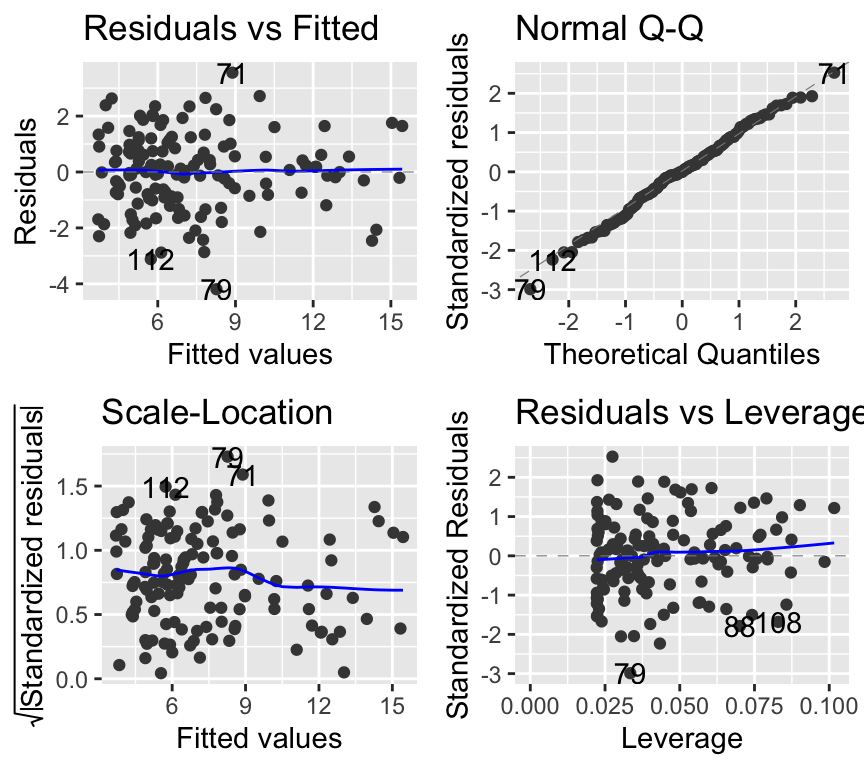

Review: planning and implementing statistical analyses (L12)
Introduction
In earlier chapters we learned many different statistical tools:
linear regression
ANOVA
multiple regression
interactions
Poisson GLMs for count data
binomial GLMs for binary data
ordination
mixed models
This final chapter pulls those ideas together. The aim is not to memorize a list of tests. The aim is to move carefully from a biological question to a planned model, and then from a fitted model to a checked, interpreted, plotted, and reported result.
Important
Core idea
Do not start with “Which test do I use?” Start with the biological question, sketch the expected figure, identify the response variable and data structure, then choose the model.
The chapter has two parts:
Planning: what to decide before collecting or analyzing data.
Implementation: what to do once the data exist.
Part 1: Planning the analysis
Statistics does not begin after data collection. In a good study, the statistical plan is part of the study design.
Before collecting data, we should already be able to say:
Here is my biological question.
Here is the figure I expect to make.
Here is the response variable.
Here is the model I plan to fit.
Here is roughly how many observations I need, and how many residual degrees of freedom I expect.
This does not mean the plan can never change. Real data can surprise us. But without a plan, we often discover too late that the design does not answer the question.
The planning workflow
Biological question
|
v
Sketch expected figure
|
v
Define response variable
|
+-- Continuous -> LM / Gaussian model
+-- Binary / proportion -> binomial GLM
+-- Count -> Poisson/count GLM
+-- Multivariate -> ordination / multivariate methods
|
v
Check data structure
|
+-- independent observations -> ordinary LM / GLM
+-- grouped / repeated / blocked / nested -> mixed model / random effects
|
v
Define explanatory variables
|
+-- categorical -> group differences
+-- continuous -> slopes
+-- categorical + continuous -> ANCOVA-style model
+-- multiple predictors -> multiple model
+-- interactions -> one effect depends on another
|
v
Planned statistical model
|
v
Plan sample size and expected residual df
Traditional names like ANOVA, regression, and ANCOVA are useful, but they are not the deepest decision. They are mostly different fixed-effect structures inside the linear model.
The deeper questions are:
What kind of response variable do I have?
Are the observations independent, or is there grouping/repeated structure?
What kind of explanatory variables do I have?
The planning sentence
A useful planning sentence is:
We will test whether X affects (or is related with) Y using model Z, because Y is [response type], X is [predictor type], and the observations are [independent/grouped]. We plan to collect n = … observations, giving n minus the number of estimated parameters residual degrees of freedom.
This sentence is not just a reporting sentence. It is a design sentence. If you cannot complete it, the study plan (including question) is probably not clear enough yet.
Note
Residual degrees of freedom are not magic numbers that appear later in R. They are already implied by the design and the model.
Example 1: Comparing treatment means
Biological question:
Does fertilizer treatment affect plant biomass?
Planning step
Decision
Expected figure
Biomass on the y-axis, fertilizer treatment on the x-axis; probably a boxplot, dot plot, or means with confidence intervals
Response variable
Plant biomass, continuous
Data structure
Each plant is measured once and plants are independent
Explanatory variables
Fertilizer treatment, categorical: control, low fertilizer, high fertilizer
Planned model
Gaussian linear model with biomass as the response and fertilizer treatment as the explanatory variable
Traditional name
One-way ANOVA, also understood as a linear model with one categorical predictor
Example model:
m1 <-lm(biomass ~ fertilizer, data = plants)
Suppose we plan 20 plants per treatment and 3 treatments. That gives \(n = 60\) observations.
The model estimates 3 treatment means, so the expected residual df is approximately:
60 - 3 = 57
Planning sentence:
We will test whether fertilizer treatment affects plant biomass using a Gaussian linear model, because biomass is continuous, fertilizer treatment is categorical, and each plant is measured independently. We plan to collect 60 observations, 20 per treatment, giving an expected residual df of about 57.
Example 2: A continuous predictor
Biological question:
Does temperature affect growth rate?
Planning step
Decision
Expected figure
Growth rate on the y-axis, temperature on the x-axis; a scatterplot with a fitted line and uncertainty band
Response variable
Growth rate, continuous
Data structure
Each experimental unit is measured once and observations are independent
Explanatory variables
Temperature, continuous
Planned model
Gaussian linear model with a continuous predictor
Traditional name
Linear regression
Example model:
m1 <-lm(growth_rate ~ temperature, data = growth)
Suppose we plan \(n = 50\) observations across the temperature gradient.
The model estimates an intercept and a slope, so the expected residual df is:
50 - 2 = 48
Planning sentence:
We will test whether temperature affects growth rate using a Gaussian linear model, because growth rate is continuous, temperature is continuous, and observations are independent. We plan to collect 50 observations, giving an expected residual df of about 48.
The expected figure helps clarify the model. If the figure is a scatterplot with one fitted line, the model is probably a regression-type model.
Example 3: Grouping structure and random effects
Biological question:
Does a drug treatment affect heart rate when each animal is measured repeatedly over time?
Planning step
Decision
Expected figure
Heart rate on the y-axis, time or treatment on the x-axis, with repeated measurements connected or grouped by animal
Response variable
Heart rate, continuous
Data structure
Observations are not independent, because each animal contributes multiple measurements
Explanatory variables
Treatment is categorical; time may be continuous or categorical, depending on the design
Planned model
Mixed model, because repeated measurements are grouped within animals
Random effect
Animal identity, because measurements are repeated within animal
Example model:
m1 <-lmer(heart_rate ~ treatment + time + (1| animal_id), data = heart)
If the biological question is whether the treatment changes the trajectory through time, then plan an interaction:
m2 <-lmer(heart_rate ~ treatment * time + (1| animal_id), data = heart)
Here we need to plan both the number of animals and the number of measurements per animal. For example, 20 animals measured 5 times each gives 100 observations, but those 100 observations are not equivalent to 100 independent animals.
Planning sentence:
We will test whether drug treatment affects heart rate over time using a mixed model, because heart rate is continuous, treatment and time are explanatory variables, and repeated measurements are grouped within animals. We plan to measure 20 animals 5 times each, giving 100 total observations, while accounting for animal identity as a random effect.
Caution
The random-effects question comes early. Before asking “ANOVA or regression?”, ask whether the observations are independent.
Example 4: Binary response
Biological question:
Does habitat type affect whether individuals are infected?
Planning step
Decision
Expected figure
Infection probability on the y-axis and habitat type on the x-axis, perhaps shown as proportions with confidence intervals
Response variable
Infection status: infected or not infected, binary
Data structure
Each individual is sampled once and observations are independent
Explanatory variables
Habitat type, categorical
Planned model
Binomial GLM
Example model:
m1 <-glm(infected ~ habitat, family = binomial, data = infection)
Suppose we plan 50 individuals in each of two habitats, giving \(n = 100\) observations. With two habitat groups, the expected residual df is roughly:
100 - 2 = 98
Planning sentence:
We will test whether infection probability differs between habitats using a binomial GLM, because infection status is binary, habitat is categorical, and individuals are independent. We plan to sample 100 individuals, 50 per habitat, giving an expected residual df of about 98.
The explanatory variable could be categorical or continuous, just as in a linear model. What changes the model class is the response variable.
Part 2: Implementing the analysis
Once we have the data, the key implementation question is:
Did the model behave well enough that we can interpret it?
The workflow is:
Fit planned model
|
v
Check model assumptions / diagnostics
|
+-- okay -> interpret model output
+-- not okay -> revise model / family / structure
|
v
Interpret output
|
v
Make explicit predictions
|
v
Plot data + model predictions
|
v
Report statistical and biological conclusion
Important
The order matters. We do not fit a model, look for a small p-value, and only then check whether the model was reasonable. We check first, then interpret.
Good practice is to make predictions explicitly from the fitted model and then plot those predictions. The figure should show the model you fitted, not a model quietly fitted by the plotting function.
Example 1: Linear model with an interaction
Biological question:
Does body size affect metabolic rate, and does this body-size effect differ among three species?
This example connects several ideas from the course:
regression
treatment groups
interactions
diagnostic plots
reading model output
degrees of freedom
explicit prediction and plotting
Planning recap
Planning step
Decision
Expected figure
Scatterplot of metabolic rate against body size, with separate fitted lines for each species
Response variable
metabolic_rate, continuous
Data structure
Independent observations, assuming each individual is measured once
Explanatory variables
body_size, continuous; species, categorical
Planned model
Gaussian linear model with a species-by-body-size interaction
Approximate residual df
Number of observations minus number of estimated parameters
Planning sentence:
We will test whether body size affects metabolic rate differently among species using a Gaussian linear model with a species-by-body-size interaction, because metabolic rate is continuous, body size is continuous, species is categorical, and observations are independent.
Rows: 135 Columns: 3
── Column specification ────────────────────────────────────────────────────────
Delimiter: ","
chr (1): species
dbl (2): body_size, metabolic_rate
ℹ Use `spec()` to retrieve the full column specification for this data.
ℹ Specify the column types or set `show_col_types = FALSE` to quiet this message.
m_metabolism <-lm(metabolic_rate ~ species * body_size, data = metabolism)
The model formula:
metabolic_rate ~ species * body_size
means:
metabolic_rate ~ species + body_size + species:body_size
The * means main effects plus the interaction. We use it when the biological question is whether the effect of one predictor depends on another predictor.
Check the model before interpreting
For a linear model, the common diagnostic questions are:
Diagnostic plot
Question
Residuals vs fitted
Is there obvious nonlinearity or unequal variance?
QQ plot
Are residuals approximately normal?
Scale-location
Does residual spread change with fitted values?
Residuals vs leverage
Are a few observations dominating the model?
autoplot(m_metabolism)
Warning: `fortify(<lm>)` was deprecated in ggplot2 4.0.0.
ℹ Please use `broom::augment(<lm>)` instead.
ℹ The deprecated feature was likely used in the ggfortify package.
Please report the issue at <https://github.com/sinhrks/ggfortify/issues>.
Warning: `aes_string()` was deprecated in ggplot2 3.0.0.
ℹ Please use tidy evaluation idioms with `aes()`.
ℹ See also `vignette("ggplot2-in-packages")` for more information.
ℹ The deprecated feature was likely used in the ggfortify package.
Please report the issue at <https://github.com/sinhrks/ggfortify/issues>.
Warning: Using `size` aesthetic for lines was deprecated in ggplot2 3.4.0.
ℹ Please use `linewidth` instead.
ℹ The deprecated feature was likely used in the ggfortify package.
Please report the issue at <https://github.com/sinhrks/ggfortify/issues>.

We are not looking for perfect plots. We are looking for obvious problems that would make the model inappropriate.
Possible actions if diagnostics look bad:
reconsider whether the response should be transformed
reconsider whether the relationship is nonlinear
check for influential observations
check whether important grouping structure was ignored
for non-continuous responses, consider a GLM family instead of an LM
Interpret the output
summary(m_metabolism)
Call:
lm(formula = metabolic_rate ~ species * body_size, data = metabolism)
Residuals:
Min 1Q Median 3Q Max
-4.1918 -0.8628 -0.0026 0.9103 3.5532
Coefficients:
Estimate Std. Error t value Pr(>|t|)
(Intercept) 3.83601 0.56726 6.762 4.25e-10 ***
speciesspecies_B -0.42823 0.80217 -0.534 0.5944
speciesspecies_C -0.68723 0.79494 -0.865 0.3889
body_size 0.17335 0.03001 5.777 5.40e-08 ***
speciesspecies_B:body_size 0.23073 0.04327 5.333 4.20e-07 ***
speciesspecies_C:body_size -0.07204 0.04127 -1.746 0.0832 .
---
Signif. codes: 0 '***' 0.001 '**' 0.01 '*' 0.05 '.' 0.1 ' ' 1
Residual standard error: 1.426 on 129 degrees of freedom
Multiple R-squared: 0.8028, Adjusted R-squared: 0.7952
F-statistic: 105 on 5 and 129 DF, p-value: < 2.2e-16
anova(m_metabolism)
Analysis of Variance Table
Response: metabolic_rate
Df Sum Sq Mean Sq F value Pr(>F)
species 2 632.80 316.40 155.492 < 2.2e-16 ***
body_size 1 324.39 324.39 159.417 < 2.2e-16 ***
species:body_size 2 111.55 55.78 27.411 1.201e-10 ***
Residuals 129 262.50 2.03
---
Signif. codes: 0 '***' 0.001 '**' 0.01 '*' 0.05 '.' 0.1 ' ' 1
Use this table to orient yourself:
Question level
Model/output
Common test statistic
What it asks
Model / term level
ANOVA table for LM
F
Does this explanatory variable or term explain variation in the response?
Model / term level
Deviance comparison for GLM
Deviance / chi-square-like test
Does adding/removing this term improve the model?
Coefficient level
Linear model coefficients
t
Is this estimated coefficient different from zero?
Coefficient level
Binomial/Poisson GLM coefficients
z
Is this estimated coefficient different from zero on the link scale?
Coefficient level
Confidence interval
CI
What range of effect sizes is compatible with the data/model?
summary() often gives coefficient-level tests. anova() often gives term-level tests. These are related, but they are not always asking exactly the same question.
Residual degrees of freedom:
df.residual(m_metabolism)
[1] 129
Residual degrees of freedom are the amount of information left for estimating error after fitting the model. Here they are roughly the number of observations minus the number of estimated parameters.
nrow(metabolism)
[1] 135
length(coef(m_metabolism))
[1] 6
nrow(metabolism) -length(coef(m_metabolism))
[1] 129
Make explicit predictions
Do not use geom_smooth() as the model.
Instead:
fit the model
create new data containing the predictor values we want predictions for
The model and the figure now match. The lines and ribbons come from m_metabolism, the model we fitted and checked.
Report
Example structure:
We fitted a Gaussian linear model testing whether metabolic rate depended on body size, species, and their interaction. Diagnostic plots did not show major violations of model assumptions. Metabolic rate changed with body size, but the slope differed among species: the relationship was strongest in species B and weakest in species C. This indicates that species changed the relationship between body size and metabolism.
If giving formal results, add the relevant coefficient or term-level test from the output.
Example 2: Binomial GLM
Biological question:
Does habitat type affect whether individuals are infected?
Planning recap
Planning step
Decision
Expected figure
Infection probability or observed proportion infected by habitat
Response variable
infected, binary: 0 = not infected, 1 = infected
Data structure
Independent observations, assuming each individual is sampled once
Explanatory variables
habitat, categorical
Planned model
Binomial GLM
Approximate residual df
Number of observations minus number of estimated habitat probabilities
Planning sentence:
We will test whether infection probability differs between habitats using a binomial GLM, because infection status is binary, habitat is categorical, and observations are independent.
Rows: 160 Columns: 2
── Column specification ────────────────────────────────────────────────────────
Delimiter: ","
chr (1): habitat
dbl (1): infected
ℹ Use `spec()` to retrieve the full column specification for this data.
ℹ Specify the column types or set `show_col_types = FALSE` to quiet this message.
For GLMs, type = "response" gives predictions on the biological scale. For a binomial GLM, that means predicted probabilities.
Report
Example structure:
We fitted a binomial GLM testing whether infection probability differed between habitats. The model used infection status as a binary response and habitat as a categorical explanatory variable. After checking model fit, we interpreted the model on the probability scale: predicted infection probability was higher in grassland than forest.
Example 3: Count GLM
Biological question:
Does food availability affect the number of offspring produced?
Planning recap
Planning step
Decision
Expected figure
Scatterplot of offspring number against food availability, with a fitted prediction line
Response variable
n_offspring, count
Data structure
Independent observations, assuming each individual or reproductive unit is measured once
Explanatory variables
food, continuous
Planned model
Poisson GLM, with overdispersion checked after fitting
Approximate residual df
Number of observations minus number of estimated parameters
Planning sentence:
We will test whether food availability affects offspring number using a Poisson GLM, because offspring number is a count, food availability is continuous, and observations are independent.
Rows: 90 Columns: 2
── Column specification ────────────────────────────────────────────────────────
Delimiter: ","
dbl (2): food, n_offspring
ℹ Use `spec()` to retrieve the full column specification for this data.
ℹ Specify the column types or set `show_col_types = FALSE` to quiet this message.
We fitted a Poisson GLM testing whether offspring number changed with food availability. Model checks did not suggest major overdispersion. Predicted offspring number increased with food availability, suggesting that food availability was positively associated with reproductive output.
Final checklist
Planning checklist:
What is the biological question?
What would the figure look like?
What is the response variable?
Are observations independent, grouped, repeated, blocked, or nested?
What are the explanatory variables?
What model follows from those choices?
How many observations will we collect?
What residual degrees of freedom do we expect?
Implementation checklist:
Did I fit the model I planned?
Did I check assumptions or diagnostics before interpretation?
Am I reading the correct output for my question?
Am I asking a model/term-level question or a coefficient-level question?
Did I make explicit predictions from the fitted model?
Does my plot show the model I actually fitted?
Does my report include both the statistical result and the biological meaning?
The goal is not to memorize every possible test. The goal is to move carefully from biological question to planned model, and then from fitted model to checked, interpreted, plotted, and reported result.